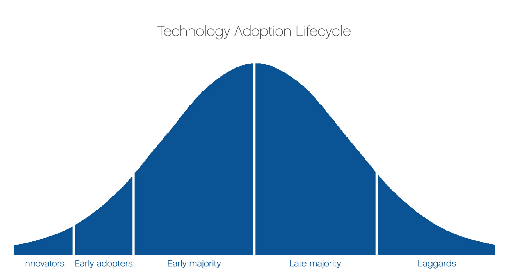

Early Use Metrics
Once a tool has been deployed for a period of time, our team assesses its observed use. In conjunction, we roll out early measures for enabling the assessment of said use. Functionally, this typically is Google's Analytics platform. By simply counting how many people are using a tool and how often, we can gauge the tool's success within its context. In addition to measuring visitation, we also include a prominent and easily accessible contact methods. In an earliest iteration, this will simply be a tag on the screen that leads to a "mailto" function. That means, when you click the tag, your browser will prompt your default email platform (often, in the case of government workers, Microsoft Outlook) to open with a pre-filled out subject title and "to" value (our team's group email, slco@codeforamerica.org).
Above screenshot shows use data from the first two weeks of ClientComm's roll out.
Our initial litmus to determine if a tool will then be two fold. First, we assess the Google Analytics data. If use is high (within the context of the deployment) or the response is vocal, we can determine that the tool passes this early usefulness test. Why do we consider the "or?" The earliest implementations of our tools are just that - early. As a result, features are limited and the interface is very rudimentary. Naturally, as the tool satisfies a core need we believe exists, it is intended to be adopted by those who need it most. If these individuals are using it, they can enhance their position (of desiring a full solution) by emailing us. Such "vocalization" of desire can flesh out early numbers and enhance our understanding of how well we "hit the nail on head."
If we consider the "Technology Adoption Lifecycle" that was developed at Iowa State University (see above image), we might consider these vocal early adopters to be the "Innovators," if you will, within the organization within which we are deploying our tool. These Innovators can act as a bellwether, indicating that we have developed something that has potential to provide utility to a majority of the workforce within that organization. As a result, low initial numbers can be "good news" if paired with such vocalization.

Assessing needs and strategizing incremental application strategies.